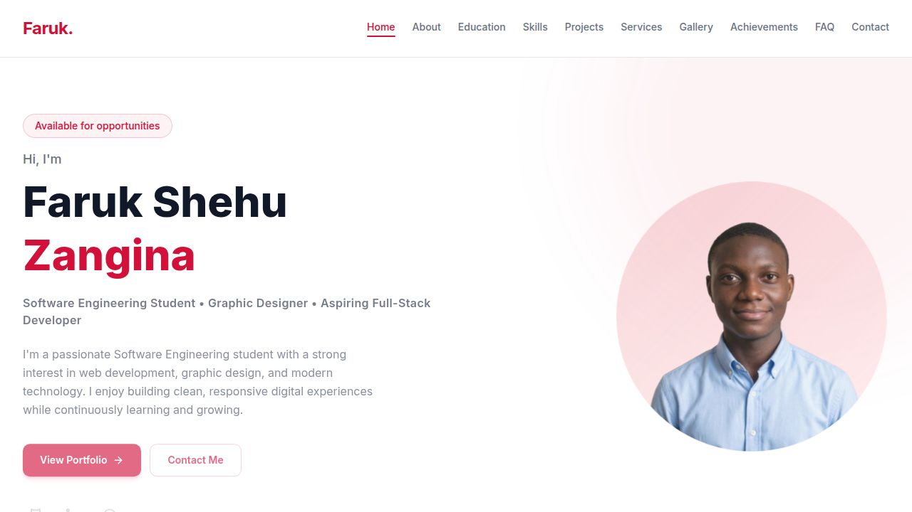
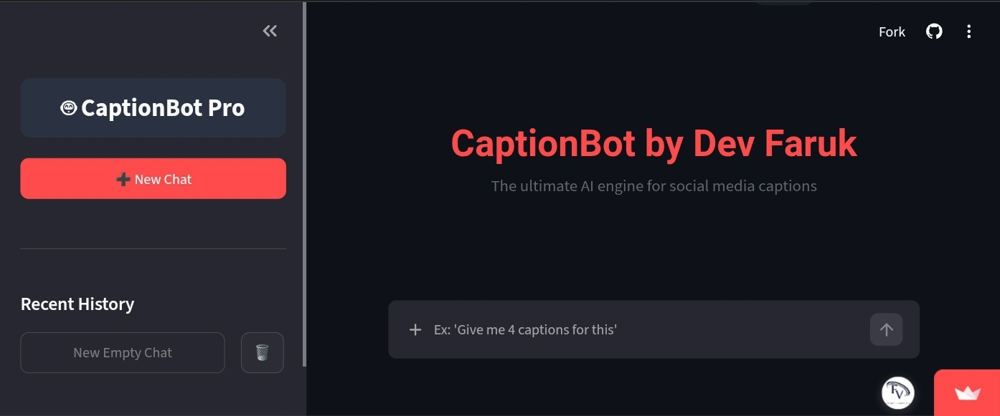
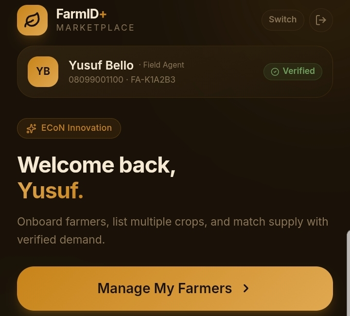

Featured Projects
These projects demonstrate my learning, creativity and passion for software development.

Personal Portfolio
A responsive portfolio website developed using HTML, CSS and JavaScript to showcase my education, skills and projects.
View Project
Caption Bot
An AI-powered web application I independently developed to assist content creators and small business owners in generating engaging and relevant social media captions.
View Project
Farm ID Plus
Farm ID Plus was designed to help farmers, agricultural businesses, or field agents track and manage essential farming data. I used an AI tool in building this to enhance my AI usage.
View ProjectFuture Projects
Projects I intend to build as my skills continue to improve.
Bill Payment App
A modern application for airtime, data subscriptions and utility bill payments.
2D Game
A simple game developed using Unity as part of my game development journey.
AI Applications
Building intelligent applications powered by artificial intelligence.
Project Highlights
A quick overview of my current development journey.
3+
Completed Projects
5+
Projects in Progress
100%
Dedication to Learning
Project Summary
Every project I build represents another step in my software engineering journey. Although I am still a student, I enjoy transforming ideas into practical applications. As I continue learning, I plan to build more advanced web applications, mobile apps, AI-powered solutions and full-stack software.
Let's Work Together